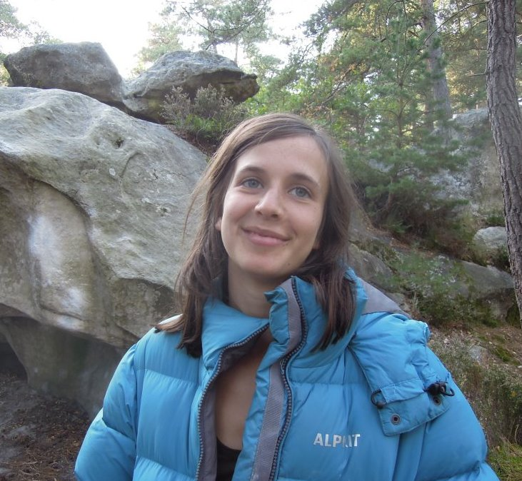

Hi, my name's Dak. I'm a full-stack JavaScript developer, currently using: Node, Express, Postgres, HTML, CSS/SASS, React, Git, Linux.
Previously I worked as a climbing wall manager, spending my free time teaching myself web-development and helping 10 year olds learn to code.
I'm a recent graduate of Founders & Coders, a highly selective full-stack bootcamp with a peer-led learning model and an emphasis on collaboration.
I'm also interested in effective altruism and have pledged (via Giving What We Can) to give 10% of my income to the most effective charities.